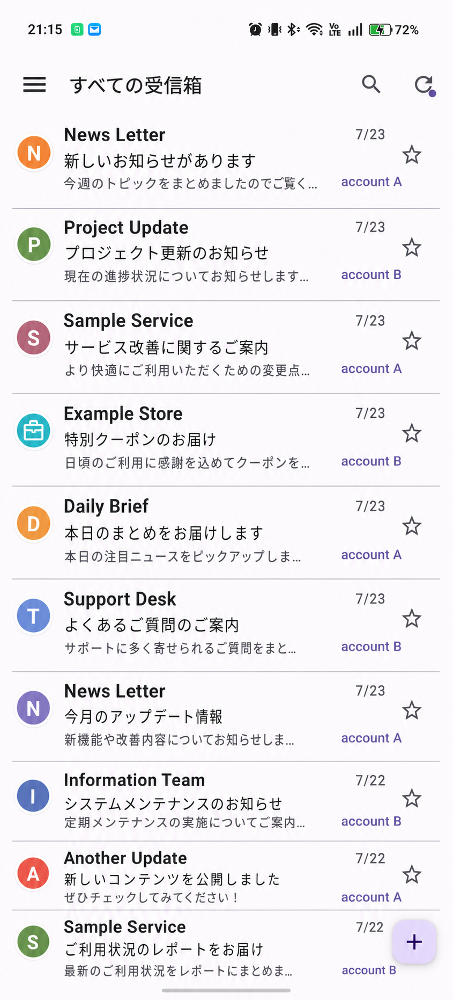

◎
全ての受信箱
GmailとIMAPを横断して、重要なメールをひとつのリストで確認できます。
Inlyra Mail / Android
複数のGmail・IMAPアカウントをひとつにまとめる、個人開発のメールアプリ。必要な情報を見やすく、落ち着いて扱える体験を目指しています。

Designed for everyday mail
メールの仕組みはしっかり使いながら、普段の操作はシンプルに。個人利用を出発点に、長く使える道具を育てています。
GmailとIMAPを横断して、重要なメールをひとつのリストで確認できます。
取得済みのメールを端末内に保持し、開閉やスクロールの待ち時間を抑えます。
外部画像やスクリプトを初期状態で制御し、必要なときだけ表示できます。